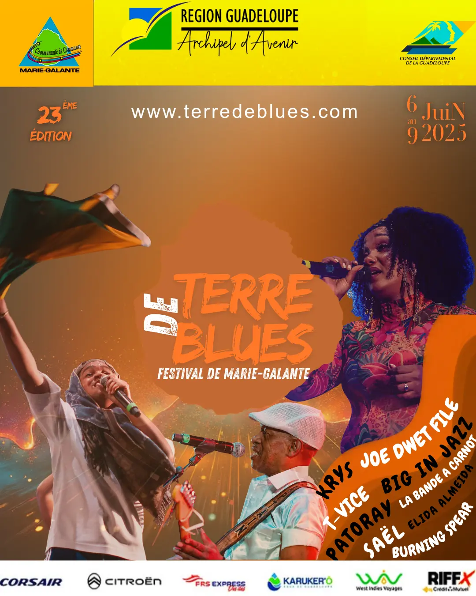

Flyer Festival Terre de Blues
Création d'un flyer promotionnel avec une palette orange et bleu dynamique.
Étudiant en BUT MMI — Je crée des identités visuelles percutantes, des interfaces soignées et des supports de communication qui marquent les esprits.

À propos
Étudiant en BUT Métiers du Multimédia et de l'Internet, je me spécialise en design graphique et communication visuelle. Mon approche mêle créativité, rigueur typographique et sensibilité esthétique pour concevoir des visuels et des identités qui racontent une histoire.
Passionné par la direction artistique, je m'investis autant dans la recherche UX que dans la création d'affiches, de logos et d'univers visuels cohérents. L'accessibilité est au cœur de ma démarche.
Réalisations
Création d'un flyer promotionnel avec une palette orange et bleu dynamique.

Expérimentation créative de design pour un concert fictif de l'artiste Tame Impala.

Post promotionnel pour un hôtel 5 étoiles design premium adapté à l'identité de l'établissement.